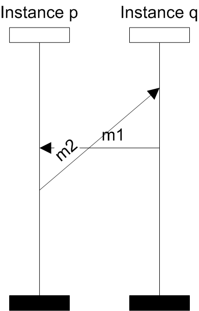
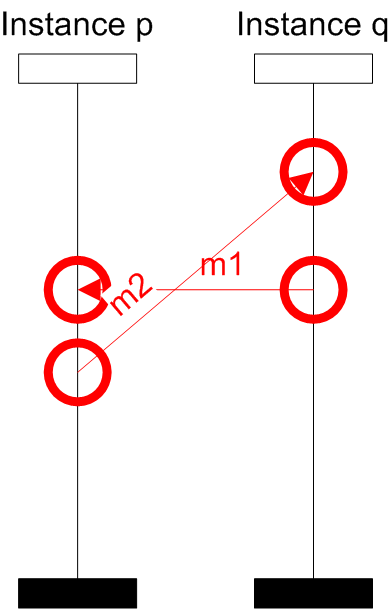
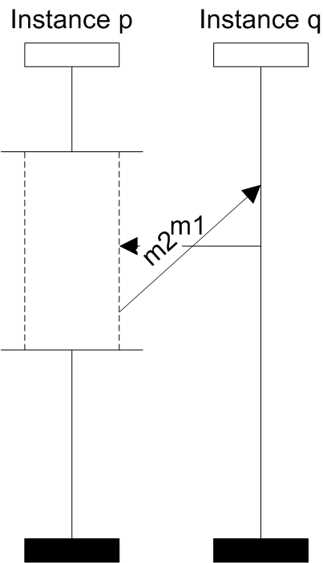

Acyclic property
ensures that there is no cyclic dependency among events in an BMSC. Such a dependency is erroneous, because it requires to wait with sending a message until it is received. An example of such BMSC design can be seen in the following figure:
-
- 
- Cyclic design
-
- 
- Highlighted cyclic dependency
Sending message m2 may not be done until message m1 is received, but message m1 may not be send until message m2 is received.
SCStudio highlights the cyclic dependency: A more tricky example of an acyclic design is depicted on the following figure. There is a coregion box on the Instance p which contains send of the message m2 and receive of the message m1. From the semantics of coregion it follows that m1, m2 are unordered. Thus we can perform first m1 and then m2 and there is no cyclic dependency.-
- 
- Acyclic design